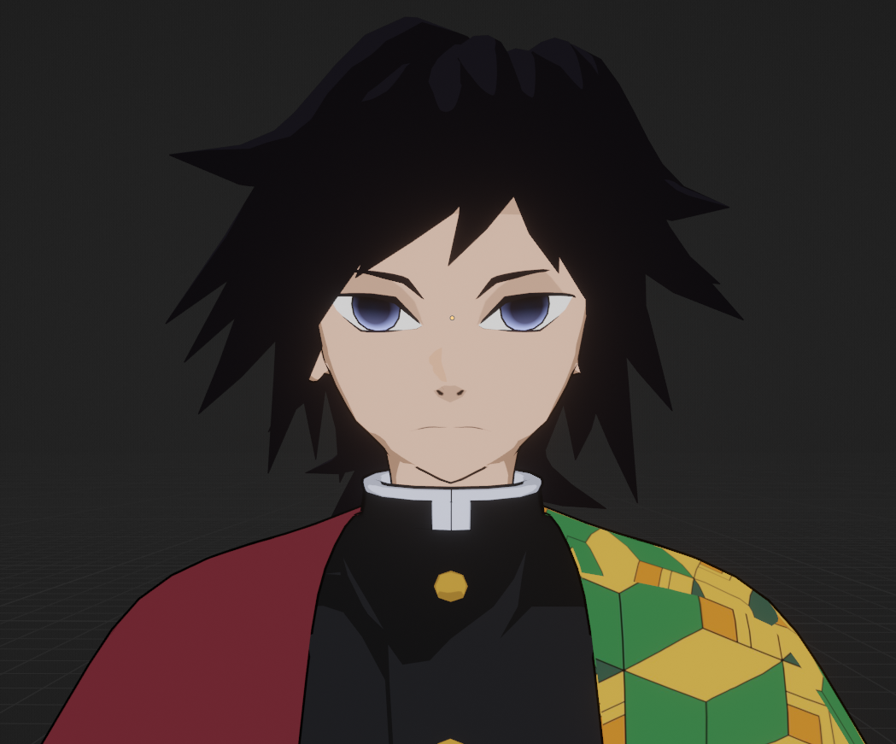
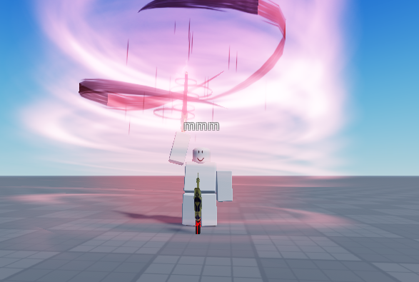
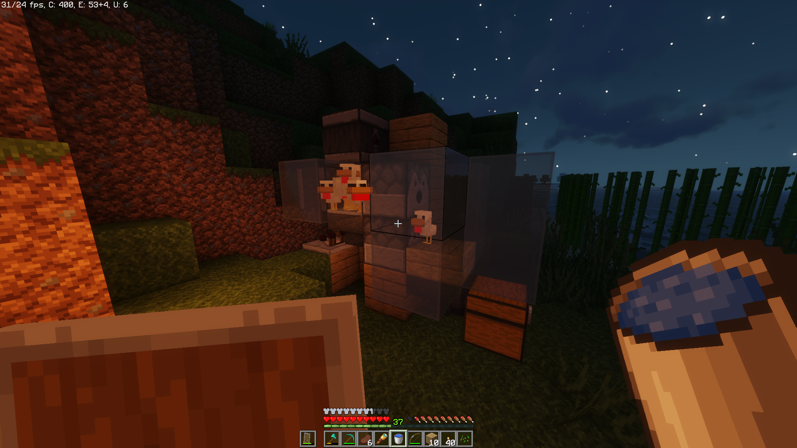
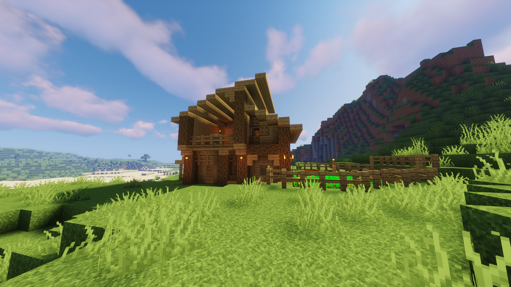
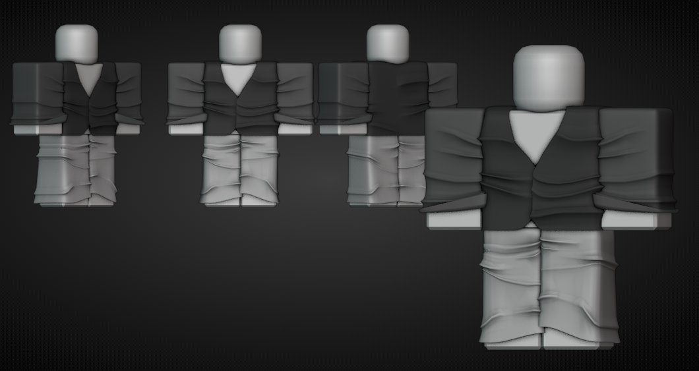
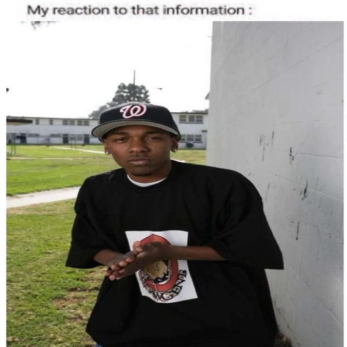
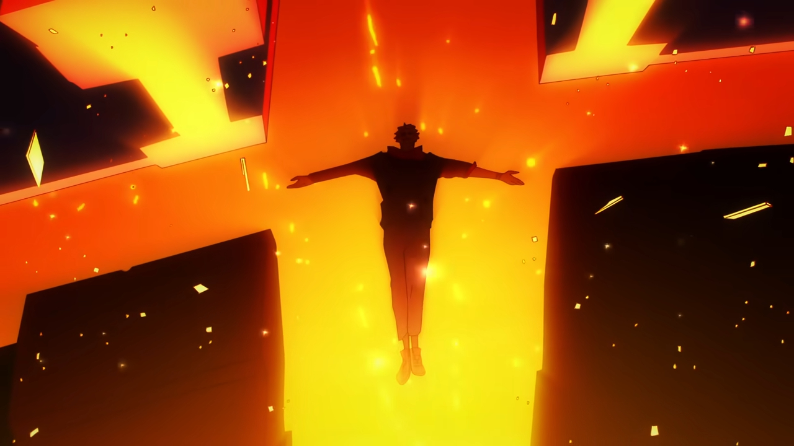

skillsets
NFTs
I made pixel art NFTs.
Modelling
I used to model sometimes.
VFX
I make VFX with Beams and ParticleEmitters.
past projects
Chicken Farm
This is a chicken farm we made on our server. The server has long been abandoned and no one plays there anymore. A throwback to the times when we still had our fun.
Minecraft House
A house that my friend built, I only took the screenshot with shaders. Also from the server with the chicken farm.
Dayvid Model
A model made by my friend dayvid from Modelling. From my knowledge, he has quit modelling and now pursues a different career.
My Reaction
This is my reaction to that information.
Sukuna's High
This scene of Sukuna's reminds me of Dio's Greatest High from JoJo's Bizarre Adventures!
socials
COPYRIGHT ALL RIGHTS RESERVED © 2024